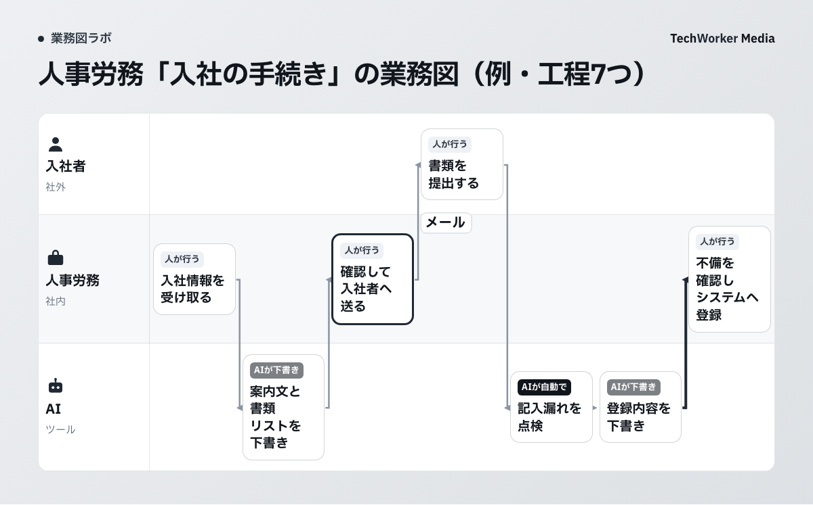
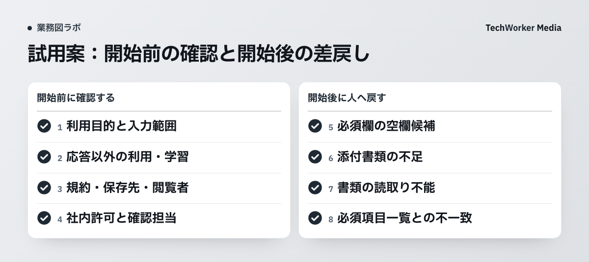

公開テンプレートで、AIと人事の受け渡しを見る
TechWorkerの「部署別 業務図テンプレート集」には、人事労務の入社手続きを7工程に分けた図があります。以下が公開中の原図です。一般的な流れをもとにした設計例であり、自社の実運用記録ではありません。

図の読みどころは、AIが作るものを人事が受け取る位置です。工程2の案内文は工程3で人事が確認して送付し、工程6の登録内容は工程7で人事が確かめて登録します。書類点検の指摘も、人事が不備と確定する前の候補として扱います。
担当と受け渡しを、表で確認します。
| 工程 | 担当 | すること |
|---|---|---|
| 1 | 人事労務 | 入社情報の受け取り |
| 2 | AI | 案内文と書類リストの作成（AIが下書き） |
| 3 | 人事労務 | 案内の確認と入社者への送付 |
| 4 | 入社者 | 書類を提出する |
| 5 | AI | 書類の記入漏れの点検（AIが自動で） |
| 6 | AI | 登録内容の作成（AIが下書き） |
| 7 | 人事労務 | 不備の確認と勤怠システムへの登録 |
工程5には「AIが自動で」とありますが、不備の有無をAIだけで確定する意味ではありません。以下では、AIが候補を拾い、人事が原本で確かめる試用案として具体化します。
この図では、AIがやらないことも2つ決めています。AIから入社者へ直接連絡しません。提出された書類の内容も書き換えません。
AIへ資料を渡す前に、何を確認しますか？
AIの利用条件を開始前に必ず確認し、開始後に見つかる書類不備とは分けて記録します。

実在する書類をAIへ入れる前に、次の4点を社内で確かめます。
- 入社手続きにAIを使う目的と、目的達成に必要な最小限の入力範囲。
- 入力情報が応答結果の出力以外に使われるか、機械学習に利用されるか。
- 利用規約とプライバシーポリシー、保存先、入力と出力を閲覧できる人。
- そのAIサービスの社内利用許可と、人事の確認担当者。
個人情報保護委員会の2023年6月2日付注意喚起は、利用目的に必要な範囲かを確認するよう求めています。2026年10月6日に原資料を確認しました。
本人の同意なく個人データを入力する場合、そのデータが応答の生成以外に使われると、法令に抵触する可能性があります。提供者が機械学習に利用しないことなどを確認したうえで、利用規約とプライバシーポリシーも確認します。
個人番号、本人確認書類、健康情報などは、本記事の試行には使いません。これらに関する個別法令の解説は、本記事の対象外です。
この4点が決まっていない場合は、実在する入社者の情報で試行を始めません。まず架空データで工程だけを確かめます。これは開始前の停止条件です。この一覧を満たしても、実データ利用の適法性を保証するものではありません。
開始後は、必須欄の空欄候補、添付不足、読取り不能、必須項目一覧との食い違いで止めます。人事が原本を確認し、必要なら入社者へ連絡します。開始前の利用条件と、開始後の書類不備は別の欄に記録します。
どこを人の確定工程として残しますか？
送付、不備の確定、システム登録の3か所を人の工程として残し、AIだけで次へ進めません。
案内文と書類リストはAIが下書きします。送付先、提出期限、必要書類が自社の運用と合っているかは人事が確認し、確認前の文面は送りません。
提出後の書類では、AIが「必須欄が空欄に見える」「一覧と添付数が合わない」といった機械的な候補を拾います。対象書類、該当項目、指摘理由を残し、人事が原本と必須項目一覧を照合して不備かどうかを確定します。空欄が記載不要か、別紙で補われているか、画像が読取りにくいだけかを、AIだけでは判断できないためです。
問題がなければ候補を閉じ、不備なら人事が入社者へ確認する内容をまとめます。AIは入社者へ直接連絡せず、欠けた内容を推測して埋めません。AIの候補と、人事の確定結果は別の欄に残します。
勤怠システムへ入れる内容もAIは下書きに留めます。人事が原本と照合し、登録先と内容を確かめて入力します。
自社で試すとき、何を書けばよいですか？
工程名、入力、AIの担当、人の確認、AIがやらないこと、開始前条件、開始後の停止条件を書きます。
次は、読者が試すための新しい記入例です。TechWorkerの実運用記録ではありません。実在する個人情報を使わず、架空の書類で試してください。
| 欄 | 記入例（試用案） |
|---|---|
| 工程名 | 提出書類の記入漏れ候補を拾う |
| 入力 | 架空の入社情報シート、社内の必須項目一覧 |
| AIの担当 | 空欄、添付不足、形式違いの候補を一覧にする |
| 人の確認 | 人事が原本と必須項目一覧を照合し、不備か確定する |
| AIがやらないこと | 内容を補わない、書類を書き換えない、本人へ連絡しない |
| 開始前条件 | 利用目的・入力範囲、応答以外の利用・学習、規約、保存先・閲覧者、社内利用許可、確認者が決まっている |
| 開始後の停止条件 | 空欄候補、添付不足、読取り不能、必須項目一覧との不一致がある |
人事労務と情報システムの担当者が公開図を確認し、自社の書類とシステムに合わせて7欄を書きます。次に、架空の入社情報シートで工程2、5、6だけを試します。人事が下書きと指摘候補を確認し、送付と登録はしません。
AIが挙げた候補数を成果にはしません。指摘箇所、人事が確定に使った根拠、見落としや余計な指摘を記録します。開始前条件と開始後の停止条件を分けて記録できたら、必須項目一覧と工程を直します。
業務図を一から作る場合は、部署別 業務図テンプレート集の空の型も使えます。図を見ながら、各工程で誰が確定するかを決めます。
この設計例だけでは、何が分かりませんか？
法定手続き、各社の承認、利用サービスによる入力情報の扱い、実際の時間短縮や不備削減は未確認です。
入社手続きに必要な法令や書類を網羅した一覧ではありません。自社の就業規則、承認手順、利用システムに合わせて工程を書き直す必要があります。
処理時間が短くなった、書類不備が減ったという実績も確認していません。記事で示せるのは、AIと人事の担当を分ける設計までです。
この記事は、どの資料をもとにしていますか？
TechWorkerの公開設計例と、個人情報保護委員会の生成AI利用時の注意喚起を確認しました。
出典の確認日は2026年10月6日です。本記事の試用案は、実運用結果や効果を示すものではありません。
- TechWorker「部署別 業務図テンプレート集」。人事労務「入社の手続き」。2026年10月6日確認。
- 個人情報保護委員会「生成AIサービスの利用に関する注意喚起等」。2023年6月2日。2026年10月6日確認。
自社の入社手続きを7工程で描き、AIと人の境界を決めたい方は、CompanyMap AIへご相談ください。CompanyMap AIは、AIの聞き取りで部署の業務フローを業務図にするサービスです。